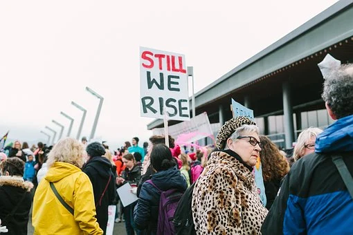

Ways to Take Action
Educate Others Around You
Having conversations about menstraution and period poverty will help destigmatize this topic. This will help future generations create a more positive and equal society.
Donate
Either gather supplies from the store or host a period product drive in your community. Ask others to help you make a impactful difference!
Look into Legit Organizations
I have linked many well known, established organizations in this website. Either donate or volunteer to intriguing organizations to contribute to make solutions!